MAXimal
добавлено: 10 Jun 2009 21:03
редактировано: 18 Oct 2011 19:15
Содержание [скрыть]
Нахождение минимального разреза. Алгоритм Штор-Вагнера
Постановка задачи
Дан неориентированный взвешенный граф  с
с  вершинами и
вершинами и  рёбрами. Разрезом называется некоторое подмножество вершин (фактически, разрез — разбиение вершин на два множества: принадлежащие и все остальные). Весом разреза называется сумма весов рёбер, проходящих через разрез, т.е. таких рёбер, ровно один конец которых принадлежит :
рёбрами. Разрезом называется некоторое подмножество вершин (фактически, разрез — разбиение вершин на два множества: принадлежащие и все остальные). Весом разреза называется сумма весов рёбер, проходящих через разрез, т.е. таких рёбер, ровно один конец которых принадлежит :
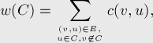
где через 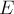 обозначено множество всех рёбер графа , а через 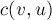 — вес ребра 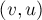.
Требуется найти разрез минимального веса.
Иногда эту задачу называют "глобальным минимальным разрезом" — по контрасту с задачей, когда заданы вершины-сток и исток, и требуется найти минимальный разрез , содержащий сток и не содержащий исток. Глобальный минимальный разрез равен минимуму среди разрезов минимальной стоимости по всевозможным парам исток-сток.
Хотя эту задачу можно решить с помощью алгоритма нахождения максимального потока (запуская его  раз для всевозможных пар истока и стока), однако ниже описан гораздо более простой и быстрый алгоритм, предложенный Матильдой Штор (Mechthild Stoer) и Франком Вагнером (Frank Wagner) в 1994 г.
раз для всевозможных пар истока и стока), однако ниже описан гораздо более простой и быстрый алгоритм, предложенный Матильдой Штор (Mechthild Stoer) и Франком Вагнером (Frank Wagner) в 1994 г.
В общем случае допускаются петли и кратные рёбра, хотя, понятно, петли абсолютно никак не влияют на результат, а все кратные рёбра можно заменить одним ребром с их суммарным весом. Поэтому мы для простоты будем считать, что во входном графе петли и кратные рёбра отсутствуют.
Описание алгоритма
Базовая идея алгоритма очень проста. Будем итеративно повторять следующий процесс: находить минимальный разрез между какой-нибудь парой вершин  и
и  , а затем объединять эти две вершины в одну (соединяя списки смежности). В конце концов, после
, а затем объединять эти две вершины в одну (соединяя списки смежности). В конце концов, после  итерации, граф сожмётся в единственную вершину и процесс остановится. После этого ответом будет являться минимальный среди всех найденных разрезов. Действительно, на каждой
итерации, граф сожмётся в единственную вершину и процесс остановится. После этого ответом будет являться минимальный среди всех найденных разрезов. Действительно, на каждой  -ой стадии найденный минимальный разрез 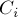 между вершинами 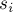 и 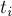 либо окажется искомым глобальным минимальным разрезом, либо же, напротив, вершины и невыгодно относить к разным множествам, поэтому мы ничего не ухудшаем, объединяя эти две вершины в одну.
-ой стадии найденный минимальный разрез 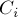 между вершинами 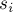 и 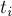 либо окажется искомым глобальным минимальным разрезом, либо же, напротив, вершины и невыгодно относить к разным множествам, поэтому мы ничего не ухудшаем, объединяя эти две вершины в одну.
Таким образом, мы свели задачу к следующей: для данного графа найти минимальный разрез между какой-нибудь, произвольной, парой вершин и . Для решения этой задачи был предложен следующий, тоже итеративный процесс. Вводим некоторое множество вершин  , которое изначально содержит единственную произвольную вершину. На каждом шаге находится вершина, наиболее сильно связанная с множеством , т.е. вершина 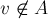, для которой следующая величина максимальна:
, которое изначально содержит единственную произвольную вершину. На каждом шаге находится вершина, наиболее сильно связанная с множеством , т.е. вершина 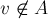, для которой следующая величина максимальна:
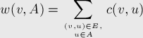
(т.е. максимальна сумма весов рёбер, один конец которых  , а другой принадлежит ).
, а другой принадлежит ).
Опять же, этот процесс завершится через итерацию, когда все вершины перейдут в множество (кстати говоря, этот процесс очень напоминает алгоритм Прима). Тогда, как утверждает теорема Штор-Вагнера, если мы обозначим через и последние две добавленные в вершины, то минимальный разрез между вершинами и будет состоять из единственной вершины — . Доказательство этой теоремы будет приведено в следующем разделе (как это часто бывает, само по себе оно никак не способствует пониманию алгоритма).
Таким образом, общая схема алгоритма Штор-Вагнера такова. Алгоритм состоит из фазы. На каждой фазе множество сначала полагается состоящим из какой-либо вершины; подсчитываются стартовые веса вершин 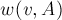. Затем происходит итерация, на каждой из которых выбирается вершина 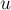 с наибольшим значением и добавляется в множество , после чего пересчитываются значения 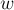 для оставшихся вершин (для чего, очевидно, надо пройтись по всем рёбрам списка смежности выбранной вершины ). После выполнения всех итераций мы запоминаем в и номера последних двух добавленных вершин, а в качестве стоимости найденного минимального разреза между и можно взять значение 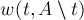. Затем надо сравнить найденный минимальный разрез с текущим ответом, если меньше, то обновить ответ. Перейти к следующей фазе.
Если не использовать никаких сложных структур данных, то самой критичной частью будет нахождение вершины с наибольшей величиной . Если производить это за  , то, учитывая, что всего фаз , и по итерации в каждой, итоговая асимптотика алгоритма получается 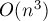.
, то, учитывая, что всего фаз , и по итерации в каждой, итоговая асимптотика алгоритма получается 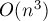.
Если для нахождения вершины с наибольшей величиной использовать Фибоначчиевы кучи (которые позволяют увеличивать значение ключа за  в среднем и извлекать максимум за
в среднем и извлекать максимум за  в среднем), то все связанные с множеством операции на одной фазе выполнятся за 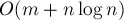. Итоговая асимптотика алгоритма в таком случае составит 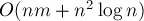.
в среднем), то все связанные с множеством операции на одной фазе выполнятся за 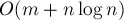. Итоговая асимптотика алгоритма в таком случае составит 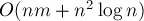.
Доказательство теоремы Штор-Вагнера
Напомним условие этой теоремы. Если добавить в множество по очереди все вершины, каждый раз добавляя вершину, наиболее сильно связанную с этим множеством, то обозначим предпоследнюю добавленную вершину через , а последнюю — через . Тогда минимальный - разрез состоит из единственной вершины — .
Для доказательства рассмотрим произвольный - разрез и покажем, что его вес не может быть меньше веса разреза, состоящего из единственной вершины :
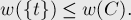
Для этого докажем следующий факт. Пусть 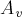 — состояние множества непосредственно перед добавлением вершины . Пусть 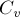 — разрез множества 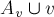, индуцированный разрезом (проще говоря, равно пересечению этих двух множеств вершин). Далее, вершина называется активной (по отношению к разрезу ), если вершина и предыдущая добавленная в вершина принадлежат разным частям разреза . Тогда, утверждается, для любой активной вершины выполняется неравенство:
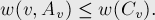
В частности, является активной вершиной (т.к. перед ним добавлялась вершина ), и при 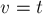 это неравенство превращается в утверждение теоремы:
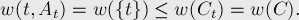
Итак, будем доказывать неравенство, для чего воспользуемся методом математической индукции.
Для первой активной вершины это неравенство верно (более того, оно обращается в равенство) — поскольку все вершины принадлежат одной части разреза, а — другой.
Пусть теперь это неравенство выполнено для всех активных вершин вплоть до некоторой вершины , докажем его для следующей активной вершины . Для этого преобразуем левую часть:
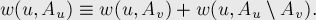
Во-первых, заметим, что:
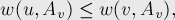
— это следует из того, что когда множество было равно , в него была добавлена именно вершина , а не , значит, она имела наибольшее значение .
Далее, поскольку 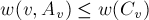 по предположению индукции, то получаем:
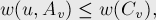
откуда имеем:
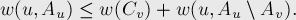
Теперь заметим, что вершина и все вершины 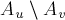 находятся в разных частях разреза , поэтому эта величина 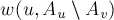 обозначает сумму весов рёбер, которые учтены в 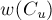, но ещё не были учтены в 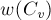, откуда получаем:
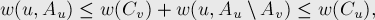
что и требовалось доказать.
Мы доказали соотношение , а из него, как уже говорилось выше, следует и вся теорема.
Реализация
Для наиболее простой и ясной реализации (с асимптотикой ) было выбрано представление графа в виде матрицы смежности. Ответ хранится в переменных 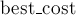 и 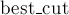 (искомые стоимость минимального разреза и сами вершины, содержащиеся в нём).
Для каждой вершины в массиве 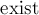 хранится, существует ли она, или она была объединена с какой-то другой вершиной. В списке 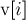 для каждой сжатой вершины хранятся номера исходных вершин, которые были сжаты в эту вершину .
Алгоритм состоит из фазы (цикл по переменной 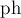). На каждой фазе сначала все вершины находятся вне множества , для чего массив 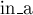 заполняется нулями, и связности всех вершин нулевые. На каждой из 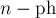 итерации находится вершина 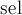 с наибольшей величиной . Если это итерация последняя, то ответ, если надо, обновляется, а предпоследняя 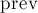 и последняя выбранные вершины объединяются в одну. Если итерация не последняя, то добавляется в множество , после чего пересчитываются веса всех остальных вершин.
Следует заметить, что алгоритм в ходе своей работы "портит" граф 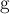, поэтому, если он ещё понадобится позже, надо сохранять его копию перед вызовом функции.
const int MAXN = 500; int n, g[MAXN][MAXN]; int best_cost = 1000000000; vector<int> best_cut; void mincut() { vector<int> v[MAXN]; for (int i=0; i<n; ++i) v[i].assign (1, i); int w[MAXN]; bool exist[MAXN], in_a[MAXN]; memset (exist, true, sizeof exist); for (int ph=0; ph<n-1; ++ph) { memset (in_a, false, sizeof in_a); memset (w, 0, sizeof w); for (int it=0, prev; it<n-ph; ++it) { int sel = -1; for (int i=0; i<n; ++i) if (exist[i] && !in_a[i] && (sel == -1 || w[i] > w[sel])) sel = i; if (it == n-ph-1) { if (w[sel] < best_cost) best_cost = w[sel], best_cut = v[sel]; v[prev].insert (v[prev].end(), v[sel].begin(), v[sel].end()); for (int i=0; i<n; ++i) g[prev][i] = g[i][prev] += g[sel][i]; exist[sel] = false; } else { in_a[sel] = true; for (int i=0; i<n; ++i) w[i] += g[sel][i]; prev = sel; } } } }
Литература
- Mechthild Stoer, Frank Wagner. A Simple Min-Cut Algorithm [1997]
- Kurt Mehlhorn, Christian Uhrig. The minimum cut algorithm of Stoer and Wagner [1995]